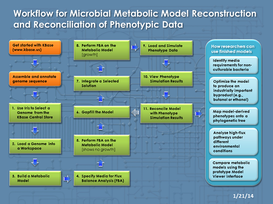
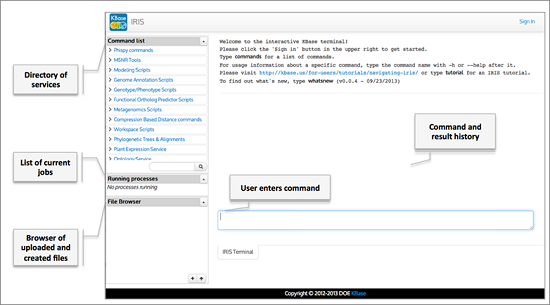
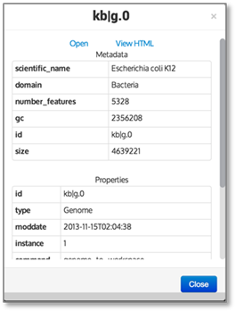
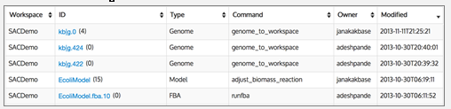
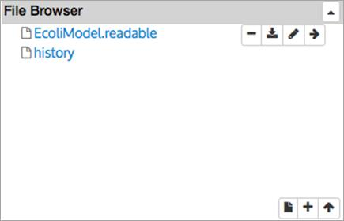
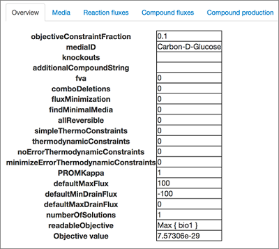
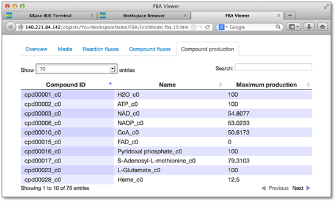

Please note: the instructions in this tutorial use IRIS, the first user interface to KBase, which is a web-based command line interface. IRIS is a legacy system and is no longer officially supported. We recommend that you use the next generation KBase user interface, the Narrative interface, instead.
We are working on a new version of this tutorial for the Narrative interface. We are leaving this tutorial up in case--despite being out of date--it is useful to some of the KBase user community.

The Department of Energy Systems Biology Knowledgebase (KBase, kbase.us) is a software and data environment designed to enable researchers to collaboratively generate, test, and share new hypotheses about gene and protein functions; perform large-scale analyses on our scalable computing infrastructure; and model interactions in microbes, plants, and their communities. It permits secure sharing of data, tools, and scientific conclusions in a unified and extensible framework.
A key scientific objective of KBase’s Microbes team is to reconstruct and predict metabolic and transcriptional regulatory networks to facilitate the manipulation of microbial function (for example, to optimize biofuel products). This tutorial highlights the tools in KBase that support the reconstruction and analysis of genome-scale metabolic models from genome sequence data.
This tutorial assumes that you:
IRIS, the first user interface to KBase, is a web-based command line interface. IRIS is a legacy system and is no longer official supported.
Please refer to the IRIS User Guide (http://kbase.us/for-users/get-started/) for step-by-step instructions on how to sign up for a KBase user account, create a workspace, and get started with IRIS.
Any IRIS command can be called with the -h argument to see a help message for that command—for example:
kbfba-buildfbamodel -h
In the IRIS help messages, the following notation is used to indicate mandatory and optional arguments:
command_name [optional argument]
In addition to KBase commands, IRIS understands some Linux commands. Please refer to the IRIS User Guide (http://kbase.us/for-users/get-started/) for more information.
Starting on the IRIS landing page (http://iris.kbase.us/), click on “Get Started.”
IRIS is a web-based command-line interface. After logging in (using the “Sign In” link at the top right), you can enter commands in the command entry box at the bottom of the screen.

Now that you are logged in, you can start retrieving and analyzing data.
KBase has two different data stores: the Central Store for KBase-curated public data and workspaces for user-controlled data (workspaces will be described in section 2 of this tutorial). You can upload your own data to KBase to analyze it, but for demonstration purposes in this tutorial, we’ll start by choosing a data object—a genome—already in the KBase Central Store.
IRIS has a set of commands that let you look for data. One of these is the all_entities_Genome command, which lists the genomes that are stored in the KBase Central Store. Enter the following command line in the IRIS command entry box:
all_entities_Genome -f scientific_name
The output from this command shows the genomes in a two-column table in which the first column is the KBase genome ID and the second column is the scientific name of the organism—for example:
| kb|g.3696 | Escherichia coli TW10828 |
| kb|g.1921 | Mycobacterium tuberculosis EAS054 |
| kb|g.9088 | Mycobacterium celatum |
| kb|g.3624 | Streptococcus sanguinis VMC66 |
| kb|g.9009 | Zymomonas mobilis subsp. mobilis ZM4 |
| … |
The Central Store contains thousands of genomes, and each genome sequence is assigned a unique KBase genome ID. Different genome sequences can exist for the same microbial strain, so the genome ID can be a very useful tool for identifying and retrieving a specific genome sequence for your analysis.
To find an organism of interest, you can use the Linux “grep” command to list all genomes with names or IDs that contain a particular string of characters. For example, if you want to find Escherichia coli K12, you can use “grep” in the following command line to retrieve all genomes with K12 in the scientific name.
all_entities_Genome -f scientific_name | grep K12
Example output:
| kb|g.3223 | Thiomonas intermedia K12 |
| kb|g.27746 | Neisseria meningitidis K1207 |
| kb|g.23270 | Streptococcus dysgalactiae subsp. equisimilis SK1250 |
| kb|g.25417 | Streptococcus salivarius K12 |
| kb|g.23052 | Streptococcus dysgalactiae subsp. equisimilis SK1249 |
| kb|g.0 | Escherichia coli K12 |
| … |
Make a note of the KBase ID for Escherichia coli K12 genome highlighted in red above. You will need to use this ID number (kb|g.0) in command lines described later in this tutorial.
Workspaces provide a way for users to store, analyze, and share their private data objects in KBase. Workspaces are data “containers” that are analogous to a folder or directory on your computer, but instead of being on your computer, they are stored inside KBase. Once you place a genome, model, or other data object into your workspace, it remains there until you decide to delete it. The analysis tools in KBase can read input from and write output to data objects in your workspace, and workspaces automatically perform versioning and track provenance on all data objects stored there.
Note that workspace names in KBase are case-sensitive and can only contain letters and numbers. You can also use the underscore character in a workspace name, but spaces, dashes, punctuation marks, and other non-alphanumeric characters are not allowed.
Before you begin the analysis workflow in this tutorial, you will need to choose an existing workspace to hold your analysis results, or create and name a new workspace.
You can create your own new workspace with the kbws-createws command. To successfully run in IRIS, this command must be followed by two mandatory arguments: (1) a workspace name and (2) a permission setting. In the following command, “YourWorkspaceName” should be replaced with a unique name that you provide (see the “Tips on Naming Workspaces” box). The “r” argument sets the permissions to allow anyone to read your workspace and its contents (see box below for more about permission setting).
kbws-createws YourWorkspaceName r
If you were successful in setting up a new workspace, IRIS will immediately return a message stating that a workspace was created with the name you provided.
When using the kbws-createws command, choose one of the following single-letter arguments to specify the permission setting for your workspace.
n — Argument specifying that no other users can see or access your workspace.
r — Argument specifying that all other users can read or view your workspace.
If you are signed in to IRIS and you forget which workspace you are currently working in, just run the kbws-workspace command again with no arguments. IRIS will return the name of your current workspace.
Before you start running commands that generate new data objects, you will need to select the workspace where you want to store those objects. To select a workspace, enter the kbws-workspace command followed by the name of the workspace you want to use (remember to replace “YourWorkspaceName” in the following command line):
kbws-workspace YourWorkspaceName
In the previous section, you found the genome ID (kb|g.0) for Escherichia coli K12. You can use the following command to load this genome from the Central Store into your workspace:
kbfba-loadgenome kb|g.0
This command may take a few seconds to run. When the process is complete, IRIS should return output stating that the genome was successfully loaded to your workspace.
To list all the objects in your selected workspace, use the following command with no arguments:
kbws-listobj
If you just created your workspace, the only object listed should be the genome you just loaded.
In addition to using IRIS to list objects, another option for viewing the contents of your workspace is to access the Workspace Browser (see the Workspace Browser box below). You can access the Workspace Browser from the Narrative interface. 
Go to the Workspace Browser, sign in, find your workspace, and refresh the page in your web browser. You should see the newly added genome object in your workspace. You can click any object ID to see more information about that object.
Click on “kb|g.0” in the ID column of your genome object. This will open a pop-up window (see screenshot) in which you can click “View HTML.”
Selecting the “View HTML” option for an object will bring up a web page showing object information such as the functional roles (in the “Annotation features” tab) and other genomic information for the selected genome.
We will use the “View HTML” option in several of the steps in this tutorial. To easily move back and forth between IRIS and the Workspace Browser, you may want to open separate tabs in your browser for each of these tools.
NOTE: It is recommended that you run the commands and carry out the analyses described in this tutorial using your own workspace. For your reference, you can view all of the data objects generated using the steps in this tutorial from a workspace called SACDemo. You can access SACDemo and other publicly accessible workspaces using the Workspace Browser.
The Workspace Browser is a prototype viewer that allows you to explore workspace objects in various formats. It also lets you create, copy, or delete workspaces. You can access the Workspace Browser from the Narrative interface.

When you click on a workspace listed on the left side of the Workspace Browser interface, you can view the objects stored in the selected workspace. Information about each object is displayed in a tabular HTML view (shown above). From left to right, the columns in this table are:
KBase’s toolkit includes a suite of commands relating to the reconstruction, curation, reconciliation, and analysis of metabolic models. This section and the sections that follow explore some of that functionality.
Now that you’ve loaded a genome object into your workspace, you can build an initial draft metabolic model with the kbfba-buildfbamodel command. An initial draft metabolic model is built based on the gene annotations in your genome object. Create a metabolic model called “EcoliModel” from the kb|g.0 genome object using the following command line.
kbfba-buildfbamodel kb|g.0 -m EcoliModel
The “-m” is an optional argument that lets you provide a name for the output model. If you do not include “-m EcoliModel” in your command line, KBase will automatically generate a name for the output model based on the genome ID.
It may take a few seconds to create your draft metabolic model. Once the process is complete, you can use kbws-listobj to see the newly created model object or go to the Workspace Browser, refresh, and view the model object in the HTML view.
Suppose you have all your genomes loaded into another workspace (e.g., KBaseCDMGenomes), but you want your model to be created in your currently selected workspace. You can use the “--genomews” argument to specify the workspace where the genome object is located:
kbfba-buildfbamodel kb|g.0 -m EcoliModel_CDM --genomews KBaseCDMGenomes
From the IRIS interface, you can export your model object to other file formats using kbfba-exportfbamodel command. Access the help documentation for this command by entering:
kbfba-exportfbamodel -h
To quickly reenter commands that you have previously used, click in the IRIS command entry box and use the up and down arrow keys to scroll through your command history.
This will give you a list of all the arguments and usage. The kbfba-exportfbamodel command must be followed by two mandatory arguments: (1) the name of the model you want to export and (2) the format you want to use for the output file. Note that you can export your model in HTML, SBML, JSON, CytoSEED, or readable format.
In this example, we will export the model to “readable” format, which creates a tab-delimited table that you can view in IRIS or download to your computer and manipulate with Excel or other spreadsheet software.
In the following command line for exporting your model in readable format, the Linux “>” redirect operator sends the output to the file “EcoliModel.readable”:
kbfba-exportfbamodel EcoliModel readable > EcoliModel.readable
The output file is saved in your IRIS file space, and you should see “EcoliModel.readable” in the File Browser box on the left side of the IRIS interface. You can view, download, or delete it using the buttons that appear when you hover over the file name in the File Browser (see the box below for more information about the File Browser).
File Browser
|
||
|
 |
Icons that appear when you hover your mouse over a file: |
|
|
Delete a file |
||
|
Download a file |
||
|
Edit a file |
||
|
Add file to command input |
||
|
Other File Browser icons: |
||
|
Create and edit a file |
||
|
Create a new directory |
||
|
Upload a file |
||
Once you have built a metabolic model, you can perform flux balance analysis (FBA) to calculate the flow of metabolites through your model. FBA results can be used to predict the growth rate of an organism under certain conditions or the production rates for particular metabolites of interest.
In order to perform FBA, you need to describe the media conditions that you want to investigate using your metabolic model. In KBase, a media object specifies the chemical content of the solution in which you want to analyze the growth of your organism. KBase provides users with more than 500 media conditions to use when running FBA. These can be found in the KBaseMedia workspace. New capabilities are constantly being added to IRIS, and in the future, users will be able to upload custom media formulations from a tab-delimited input file specifying compounds, concentrations, uptake limits, and other attributes.
You can use the kbfba-exportmedia command to view the components of a media object in HTML, JSON, or human-readable text formats. For example, you can use the following command to view the “Carbon-D-Glucose” media object in “readable” format. The “-w” and “KBaseMedia” arguments specify the workspace in which the media is located.
kbfba-exportmedia Carbon-D-Glucose readable -w KBaseMedia
Output produced:
Attributes {
uuid:KBaseMedia/Carbon-D-Glucose
id:Carbon-D-Glucose
name:Carbon-D-Glucose
compoundListString:Co2+;Cl;H+;Ca2+;Cu2+;Sulfate;Zn2+;Mn2+;NH3;Phosphate;H2O;O2;K+;Mg;Na+;Fe2+;fe3;Molybdate;Ni2+;D-Glucose
isDefined:0
isMinimal:0
type:unspecified
}
Note that if you do not specify the media conditions when running the FBA command (which is covered in the next section of this tutorial), KBase will use “Complete” media by default. “Complete” media includes many nutrients compared to minimal media. As such, it is a rich media, typically causing the model to make minimal use of biosynthesis pathways.
Now that you have a metabolic model, you can perform FBA on it by using the kbfba-runfba command.
To run this command on the “EcoliModel” you created in section 3, you need a media object, as described in the previous section. In the following command line, the “-m” and “Carbon-D-Glucose” arguments specify the media object that you want to use. The “--mediaws” argument identifies the workspace (“KBaseMedia”) where the media object is located. Enter the following in the IRIS command entry box:
kbfba-runfba EcoliModel -m Carbon-D-Glucose --mediaws KBaseMedia
In a few seconds, IRIS should return output indicating that the flux balance analysis was successful (see sample output below):
kbfba-runfba EcoliModel -m Carbon-D-Glucose --mediaws KBaseMedia Flux balance analysis successful: Object ID: EcoliModel.fba.0 Type: FBA Workspace: YourWorkspaceName Owner: yourusername Instance: 0 Moddate: 2013-11-24T17:27:10 Last cmd: runfba Modified by: yourusername Perm ref: A6306E12-552D-11E3-AF92-0D3DEFC29634 Checksum: 8a5ea07c7b890fbdda25368dad10b64c object_value: 7.57306e-29 notes: media_uuid: KBaseMedia/Carbon-D-Glucose
Object ID. Note the “Object ID” (outlined in red in the output above) for the FBA object that you created. In this example, the resulting FBA object is named “EcoliModel.fba.0”.
object_value. The objective value (outlined in blue in the output above) represents the maximum achievable flux through the biomass reaction of the metabolic model. An objective value of 0 or something very close to 0 (e.g., 7.57306e-29) means that the model did not grow on Carbon-D-Glucose media. Initial draft models typically show no growth because the annotations in the genome object are often missing pathways needed for biomass production.
media_uuid. This attribute (outlined in green in the output above) identifies the media object used to create your FBA object. In this example, “KBaseMedia/Carbon-D-Glucose” means the Carbon-D-Glucose media from the KBaseMedia workspace was used.
Return to your workspace in the Workspace Browser, and refresh the page in your web browser. You should be able to see the newly created FBA object. (You may want to click on the “Modified” column header to bring the most recently changed objects to the top of the list.)
Click on your FBA object ID, and then click on “View HTML” in the pop-up window. This will open the overview page for your FBA object (see next screenshot).

The FBA process produces three general types of numerical fluxes:
The “Compound production” tab (see screenshot below) in the HTML view of your FBA object is a useful tool for identifying missing biomass components and learning about the gaps in your draft metabolic model. Typically, biomass reactions are large and complex, including 40 to 50 components. This analysis can help you identify which specific components cannot be produced by the pathways in the model in the specified media condition. This can be particularly useful if you do a knockout and lose biomass; you can see which biomass components were lost as a result of the knockout.

NOTE: The above screenshot shows the “Compound production” tab for the FBA object created from EcoliModel. Those compounds with a zero value in the “Maximum production” column were not produced. To see more compounds on a single page, change the number in the “Show” dropdown menu in the upper left corner.
The FBA results generated in this section of the tutorial indicate that the initial draft EcoliModel did not grow on the specified media. This is very common. A draft model contains only the set of reactions derived from the set of annotated genes. It is possible that the annotation process may have missed genes that are essential to the organism’s metabolism, or that they are missing from the assembly stage. Some of the most common problems arise from having missing transporters—reactions that move metabolites across cell membranes—because they are very difficult to annotate well.
As a result, the initial draft model may have gaps in its metabolic network. The gapfilling process (covered in the next section of this tutorial) attempts to fill the gaps in the best way possible. It uses a cost function associated with each internal reaction and transporter to find a solution that uses the fewest reactions to fill all gaps, and it does this without extra knowledge about the organism’s biochemistry. The solution with the minimal number of extra reactions is likely to be the most correct.
Now that you know your EcoliModel does not grow on Carbon-D-Glucose minimal media, you need to gapfill the model. The gapfilling process compares the set of reactions in your metabolic model to a database of all known reactions and attempts to find a set of reactions that, when added to your model, allow it to grow. The set of reactions (known as the gapfilling solution) can then be integrated into your model, creating a new model capable of growth on the media used in the gapfilling process.
The following command line gapfills “EcoliModel” on Carbon-D-Glucose and limits the number of solutions to 5 (--numsol 5) and the total run time to 600 seconds (--timelimit 600). If no time limit is specified, the gapfill command can take hours to complete (see box below, “A Note about Compute-Intensive Analyses”). Even if you set a time limit for this process, it can still take hours to complete depending on the queue of jobs currently waiting to run on the KBase cluster. Enter the following to gapfill EcoliModel:
kbfba-gapfill EcoliModel -m Carbon-D-Glucose --mediaws KBaseMedia --numsol 5 --timelimit 600
The kbfba-gapfill command initializes the gapfilling process and queues your job. It produces a job ID and displays output describing the job status—for example:
Gapfilling job queued: Job ID: job.44807 Job Type: FBA Job Owner: yourusername Command: queue_gapfill_model Queue time: 2013-11-24T23:33:11 Job Status: queued Model: YourWorkspaceName/EcoliModel Media: Carbon-D-Glucose
Most of the commands that we’ve used so far finish quickly, but gapfilling is a compute-intensive process that takes a while to run. For this reason, the gapfilling command runs as a background job, allowing you to perform other commands in KBase while the long-running command completes.
You can check the status of a job by calling the kbws-checkjob command with the job ID (in this example, job.44807). The status of a job may be “queued,” “running,” or “completed.”
kbws-checkjob job.44807
You can monitor the status of all the jobs you have submitted using the kbws-jobs command.
If you sign out of IRIS before your job is complete, your job will continue to run on the KBase cluster.
It could take hours for your gapfilling process to complete. To save time, the next section of this tutorial will continue using an example model of Escherichia coli that has already been gapfilled. If you don’t want to wait for the gapfill of your EcoliModel to complete, you may want to skip ahead to section 7 and use the example gapfilled model to continue with the steps in this tutorial.
If you do want to continue using your EcoliModel, you may want to log out and return later to log in and check the status of your gapfill job.
The boxes below (“Model Curation,” “Managing Versions of Data Objects,” and “Automatically Integrate a Solution During the Gapfill Process”) provide some additional command options you may want to try out while you are waiting for your gapfilling job to finish.
There are two commands relevant to model curation: kbfba-adjustbiomass, which lets you adjust the biomass composition reaction in your model, and kbfba-adjustmodel, which lets you adjust directionality, change the cellular compartment (cytosol as default), add or remove a reaction, etc.
The kbfba-adjustbiomass command below is an example of how you can remove a particular biomass compound from your metabolic model. To find the “Model compound” number for a biomass component that you would like to remove, go to the Workspace Browser and access the “Biomass reactions” tab in the HTML view of your metabolic model (EcoliModel is used in the example below). The “Model compound” number begins with “cpd” (e.g., cpdl5560). The kbfba-adjustbiomass command below is followed by the arguments for the model name and the compound name. The last argument, 0, indicates that you want to remove compound cpdl5560 (it sets the coefficient to zero and strips it out of the reaction).
kbfba-adjustbiomass EcoliModel cpd15560 0
If you go back to the Workspace Browser and look at the HTML view of the EcoliModel object, under the “Biomass reactions” tab you will see that compound cpdl5560 is now gone. If you want to put it back in, then call kbfba-adjustbiomass again and give it a coefficient more than zero.
You can add or delete reactions using the kbfba-adjustmodel command, which has several command-line options pertaining to reactions. Three of these options are: -r (removes a reaction), -a (adds a reaction back in), and -gpr (gene protein reaction association). To find a particular reaction number, go to the “Reactions” tab of your metabolic model. The reaction number is displayed in the “id” column.
For example, the following command removes reaction rxn00245 from your model:
kbfba-adjustmodel EcoliModel rxn00245 –r
KBase automatically tracks the history of all versions or instances of the models and other data objects that you create and modify in your workspace. The following kbws-history command lists all the versions of EcoliModel:
kbws-history Model EcoliModel
You can then use the kbws-revert command to revert back to a previous instance of your model. For example, in the following command line, the “-i” argument is used to reset the EcoliModel in your workspace back to the initial “0” version of the model:
kbws-revert Model EcoliModel –i 0
Adding the “--intsol” argument to the end of your kbfba-gapfill command line automatically integrates the best solution into the model (see example command line below).
kbfba-gapfill EcoliModel -m Carbon-D-Glucose --mediaws KBaseMedia --numsol 5 --timelimit 600 --intsol
Once the gapfilling process completes, you can go to the Workspace Browser HTML view of your model. Under the “Gapfilling” tab, you should be able to see the multiple solutions generated by gapfilling.
Although using the “--intsol” argument can be a useful option for quickly integrating a solution, we recommend that you go through your solutions and then decide which ones make sense to integrate into your model. The steps for choosing a solution from the gapfilling results and integrating this solution into your model are covered in section 7.
While your gapfilling jobs are still running, you may want to continue with the steps in this tutorial using an example model that has already been gapfilled on Complete media. This example model object named “kb|g.0.fbamdl.464” can be copied from another workspace (see the box below, “Using Workspaces to Move, Copy, or Delete Models”).
Type the following command line to copy the model “kb|g.0.fbamdl.464” into your workspace from the JanakaDemo workspace, and name the copied model “GapFilledEcoli.” Remember to replace “YourWorkspaceName.”
kbws-copy Model kb|g.0.fbamdl.464 GapFilledEcoli -s JanakaDemo -n YourWorkspaceName
After a few seconds, if the model was successfully copied, IRIS will return a message stating “Object copied to new ID: GapFilledEcoli.” A new model called “GapFilledEcoli” should now be in your workspace. Using the Workspace Browser, go to your workspace, refresh the page, and go to the HTML view of the GapFilledEcoli object. Click on the “Gapfilling” tab and scroll down the page to see the three solutions that were generated. The following bullets describe the columns shown from left to right in the “Gapfilling” tab:
The kbfba-integratesolution command, which you call by specifying the gapfill simulation number to the “-f” argument, can be used to integrate a solution. The gapfill simulation number that you want to use in the following command line is D22DEAC2-8043-11E2-8EC0-901F7082D269. Note that you need to specify the solution number (which is “0” from the “Solution” column) by adding “.solution.0” to the end of the gapfill simulation number. The “-i” argument lets you set the name of the integrated gapfilled solution.
kbfba-integratesolution GapFilledEcoli -f D22DEAC2-8043-11E2-8EC0-901F7082D269.solution.0 -i GapFilledEcoli_Integrated
Once the solution is integrated, IRIS should return an output message showing “Solutions successfully integrated.” The new object “GapFilledEcoli_Integrated” should now be in your workspace.
If you look at the HTML view of the “Gapfilling” tab for the GapFilledEcoli_Integrated object, in the integrated column, where it previously said “No,” it now says “Yes” (as shown in the sample output below).
Yes D22DEAC2-8043-11E2-8EC0-901F7082D269 36A4741E-3A6A-11E2-837B-C916C85230E2 0 18
This means the above solution is now integrated into the model.
KBase objects can be copied, moved, or deleted using the following commands:
You can copy any object with the kbws-copy command. The following command line shows the different kinds of arguments that you would need to include:
kbws-copy object_type source_object_ID new_object_ID -s source_workspace -n new_workspace
You can delete your whole workspace by using kbws-deletews (to do this, you must first change your workspace to a different workspace using the kbws-workspace command). Only the workspace owner can delete a workspace.
You can also copy or delete workspaces in the Workspace Browser.
Now that you have successfully integrated a solution into your gapfilled model, you can perform FBA on your GapFilledEcoli_Integrated object using Complete media (which is used by default):
kbfba-runfba GapFilledEcoli_Integrated
Once the process is complete, IRIS should return output describing the new FBA object:
Flux balance analysis successful: Object ID: GapFilledEcoli_Integrated.fba.0 Type: FBA Workspace: YourWorkspaceName Owner: yourusername Instance: 0 Moddate: 2013-11-25T16:26:41 Last cmd: runfba Modified by: yourusername Perm ref: 5DDB6614-55EE-11E3-9250-7022EFC29634 Checksum: 731d5b0f6dd32c7e2fde7b06c8b85444 object_value: 2.49313
In this output information, you should see that a new FBA object has been added to your workspace. In this example, the default name of the new FBA object (outlined in red above) is “GapFilledEcoli_Integrated.fba.0.” The object_value (outlined in blue) is now 2.49, which means that the model grew. You can also go to your workspace in the Workspace Browser, refresh the page, and view the new FBA object. In the HTML view of this object, you can see the FBA solution overview as well as the reaction and compound fluxes.
One valuable use for metabolic models in KBase is the ability to simulate growth phenotypes such as gene essentiality data or Biolog phenotype array data. This is essential for model validation, as it permits the comparison of model phenotype predictions with experimental observations. Numerous Biolog and gene essentiality datasets are already available for analysis in KBase in the “KBasePhenotypeDatasets” workspace. You can browse and analyze these datasets, or you can use the phenotype import commands in KBase to load your own dataset from a phenotype file.
The phenotype text file used in this part of the tutorial can be downloaded to your local computer from http://bioseed.mcs.anl.gov/~janakae/Phenosim/. Download the WT-phenotypes.txt file and use the up arrow button in the IRIS File Browser to upload the file from your computer to your IRIS file space. Examples in this tutorial use the WT-phenotypes.txt file, which is a dataset from a Biolog chip on a wild-type strain. Another phenotype data file of knock out mutants (KO_Phenotypes.txt) can also be uploaded into KBase.
The columns in the phenotype files are as follows:
The excerpts below show example content contained in the WT-phenotypes.txt and KO_Phenotypes.txt files.
WT-phenotypes.txt:
|
media |
mediaws |
growth |
geneko |
addtlCpd |
|---|---|---|---|---|
|
C-acetate |
phenotypeDemo |
1 |
none |
none |
|
C-adenosine |
phenotypeDemo |
1 |
none |
none |
|
C-alpha-ketoglutarate |
phenotypeDemo |
1 |
none |
none |
|
C-Butyrate |
phenotypeDemo |
1 |
none |
none |
KO_Phenotypes.txt:
|
media |
mediaws |
growth |
geneko |
addtlCpd |
|---|---|---|---|---|
|
CN-Cytidine |
phenotypeDemo |
1 |
none |
none |
|
CN-Cytidine |
phenotypeDemo |
1 |
kb|g.20848.CDS.602 |
none |
|
CN-Cytidine |
phenotypeDemo |
1 |
kb|g.20848.CDS.17 |
none |
|
CN-Cytidine |
phenotypeDemo |
1 |
kb|g.20848.CDS.930 |
none |
|
CN-Cytidine |
phenotypeDemo |
1 |
kb|g.20848.CDS.10 |
none |
|
CN-Cytidine |
phenotypeDemo |
1 |
kb|g.20848.CDS.380 |
none |
After the phenotype text files have been uploaded into File Browser, you can run the following kbfba-importpheno command to create a PhenotypeSet object called “Ecoli.Phenos” in your workspace.
kbfba-importpheno kb|g.0 WT-phenotypes.txt --phenoid Ecoli.Phenos
The kbfba-simpheno command simulates the growth of a model for a given set of media conditions. The following command simulates growth using the GapFilledEcoli_Integrated model on all the media conditions in the Ecoli.Phenos PhenotypeSet object (derived from the WT-phenoytpes.txt file). This command also creates a PhenotypeSimulationSet object called Ecoli.Phenos.simulation.
kbfba-simpheno GapFilledEcoli_Integrated Ecoli.Phenos
Since there is no HTML view for phenotype objects, you can export the results as an HTML file:
kbfba-exportphenosim Ecoli.Phenos.simulation html > EcoliPhenotypes.html
This creates a new HTML file in your IRIS file system that you can then download to your computer and view in a web browser.
You can see an HTML view of the results of the phenotypic simulations performed by the previous command by looking at the file http://bioseed.mcs.anl.gov/~janakae/phenos/EcoliPhenotypes.html.
The list below describes the columns of data generated from phenotypic simulations. FBA results are listed for each media condition derived from the WT-phenotypes.txt file dataset.
When we simulate our phenotype data, we are likely to have conditions where either the model predicts growth and the organism does not grow [a false positive prediction (FP)] or the model does not predict growth and the organism does grow [a false negative prediction (FN)]. How do you determine the problems in the genome annotation and the metabolic model that are causing these FP and FN predictions? KBase has a variety of commands that can help you find the answers to this question. These commands, which represent an implementation of the “GrowMatch” algorithm, support the phenotype reconciliation process.
The most likely explanation for a FN prediction is that the model is missing reactions required for viable growth in the specified media conditions (e.g., no asparagine metabolism pathway in a media where asparagine is the only carbon source). This error can be corrected by using the kbfba-gapfill command to add a minimal set of reactions to the model such that growth is permitted. The following command will propose up to five distinct and minimal sets of reactions that may be added to the “EcoliModel” to permit growth in “CN-L-Asparagine” media.
kbfba-gapfill EcoliModel --media CN-L-Asparagine --mediaws phenotypeDemo --numsol 5 --timelimit 600
Because gapfilling can take hours, in this example we use the “--timelimit” argument to force kbfba-gapfill to finish in 600 seconds. Once the gapfilling process is complete, it is then up the user to examine the solutions that result from this analysis and identify which one is the most plausible.
FP predictions are the most challenging to resolve in metabolic modeling. This is because these errors may arise from many possible sources. Most importantly, a metabolic model only covers metabolism, meaning it includes no accounting for regulation, toxicity, and other non-metabolic effects that may disrupt viability. Still, there is a potential metabolic explanation for a FP prediction: the model may have pathways or transporters that the organism does not have. To explore this hypothesis, KBase offers the kbfba-gapgen command, which generates gaps to disrupt growth in a specified condition while preserving growth in another specified condition. As such, when running the gap generation command, you must provide two media conditions: a target condition in which growth is to be disrupted, and a reference condition in which growth must be preserved. In our example below, our target media is C-L-Proline, while our reference media is C-Lactate:
kbfba-gapgen EcoliModel --media C-L-Proline --mediaws phenotypeDemo --refmedia C-Lactate --refmediaws phenotypeDemo --numsol 5 –-timelimit 600
Like the gapfilling command, the gap generation command takes a while to run. You can check for completion using the kbws-checkjob command that was described in section 6 of this tutorial.
Upon integration of the solutions generated from multiple gapfilling and gap generation processes, the metabolic model is now reconciled with phenotypic data. As a result, the phenotypic data–reconciled model is a more accurate model compared to the initial draft model. It has been optimized to the growth conditions in the phenotype dataset, producing an accurate metabolic network. This optimized model can be used to address important biological questions such as:
1/21/14